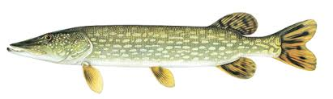
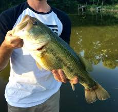

Home
Fish List
Fishing Spots
Summary

Northern Pike
Summary:
Northern Pikes are native to Northern America and Europe and are common in cold freshwater lakes and rivers. They can be caught on lures and lives bait, but have sharp teeth so wire leaders are advised.

Largemouth Bass
Summary:
Largemouth Bass are common in lakes and large rivers throughout the US. They are a feisty, fun to catch game fish that particularly like to eat plastics, crankbaits and live minnows.